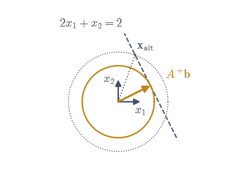
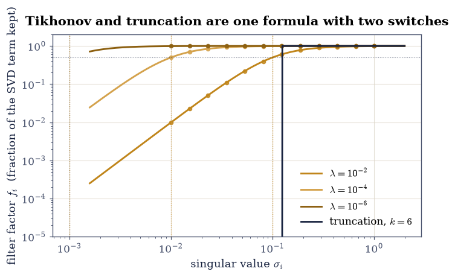
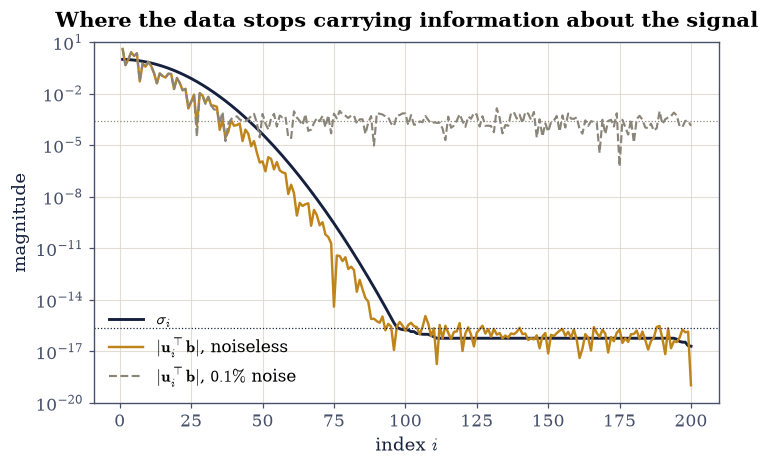
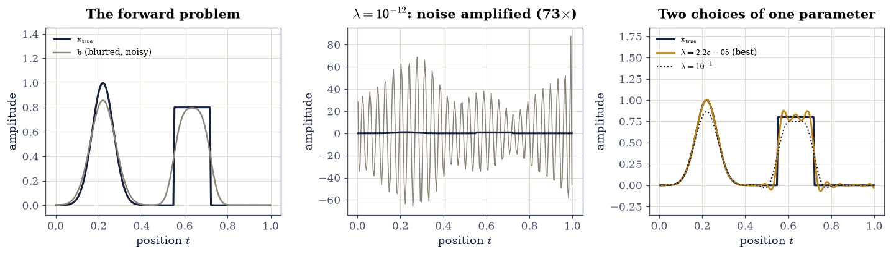
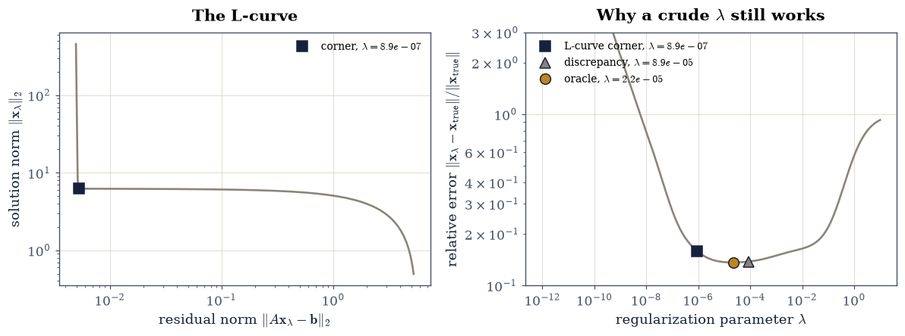
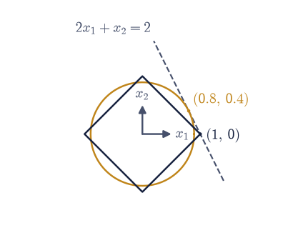

2.4 The Pseudoinverse, Rank Deficiency, and Regularization#
Notebook overview#
Every method in §2.3 assumed \(A\) has independent columns. That assumption is doing more work than it looks: it is what makes \(A^{\top}A\) invertible, what makes \(R\) nonsingular, and what makes the least-squares answer unique. Drop it and the normal equations become singular, \(QR\) has a zero on its diagonal, and the question “what is the solution?” stops having an answer, because there are infinitely many.
The pseudoinverse \(A^{+}\) is the object that survives. It exists for every matrix — square or not, full rank or not — it agrees with \(A^{-1}\) whenever the inverse exists, and when the answer is not unique it makes a specific choice: the solution of smallest norm. It is built from the SVD in one line, which is the third time in this course that the SVD has been the factorization that keeps working after the others have stopped.
Then the harder half. A problem can fail to have a usable answer not because
the matrix is singular but because it is ill-posed: the forward map genuinely
destroys information, so no algorithm can return it. The worked example is
deblurring a 1-D signal. Blurring it is a matrix multiply. Undoing it is
np.linalg.solve, and that call returns an answer wrong by a factor of
\(2\times10^{15}\) — not because solve is bad, but because the blur operator’s
smallest singular values are \(10^{-18}\) and inverting them amplifies the noise
in the last decimal place into the dominant term. The repair is
regularization: deliberately answering a slightly different question whose
answer is stable. One parameter, chosen from the data without knowing the
truth, brings the error back to 3.5%.
How to read a check. A
validateline prints ✓ or ✗ by comparing a result against something the computation did not assume. A ✗ flags a mismatch to investigate, never a verdict on its own.
Scope. Golub and Van Loan [GVL13] §5.5 for the pseudoinverse; Hansen [Han10] is the book for everything after Exercise 4 — filter factors, the discrete Picard condition, the L-curve — and is unusually readable. Penrose’s original four conditions are [Pen55]; the \(\ell^1\) material is Tibshirani [Tib96] and Hastie, Tibshirani and Friedman [HTF09] Chapter 3.
Theory in brief#
The pseudoinverse#
Let \(A\) be \(m\times n\) with rank \(r\) and economy SVD \(A = U\Sigma V^{\top}\), where \(\Sigma = \operatorname{diag}(\sigma_1 \ge \dots \ge \sigma_r > 0, 0, \dots, 0)\). The Moore–Penrose pseudoinverse is
The rule is: invert what you can, and zero what you cannot. The zeros are not an approximation or a convenience; they are what makes \(A^{+}\) unique.
Penrose’s characterisation is that \(A^{+}\) is the only matrix satisfying all four of
The first two say \(A^{+}\) is a generalized inverse (each matrix undoes the other on the part of the space where that is possible); the last two say the two products are symmetric, hence orthogonal projectors. Indeed
the orthogonal projectors onto the column space and the row space, exactly the objects §1.4 built by hand. Since a projector’s trace is its rank, \(\operatorname{tr}(AA^{+}) = r\) — a cheap and strict check.
When \(A\) is square and nonsingular, Eq. 118 gives \(A^{+} = A^{-1}\). When \(A\) is tall with independent columns it gives the least-squares solution operator \((A^{\top}A)^{-1}A^{\top}\) of §2.1. The general statement covering both:
Among all vectors that minimise the residual, \(A^{+}\mathbf{b}\) is the shortest. Both minimisations matter: the outer one because the residual may not be zero, the inner one because the minimiser may not be unique.
Truncation, and why an exact pseudoinverse is not always what one wants#
\(A^{+}\) inverts every nonzero singular value, and “nonzero” is a decision no floating-point computation can make. Worse, the inversion is unstable where \(\sigma_i\) is small: a component of \(\mathbf{b}\) along \(\mathbf{u}_i\) is amplified by \(1/\sigma_i\). The truncated SVD solution simply stops early,
discarding the directions whose inversion would do more harm than good.
Tikhonov regularization#
The smoother alternative penalises the solution’s size rather than truncating:
This goes by ridge regression in statistics and weight decay in machine learning; all three are Eq. 123. Adding \(\lambda I\) shifts every eigenvalue of \(A^{\top}A\) up by \(\lambda\), so the matrix is positive definite for any \(\lambda > 0\) whatever the rank of \(A\), and the solution always exists and is always unique.
Substituting the SVD reveals what it really does:
The \(f_i\) are the filter factors. Each is a smooth switch: \(f_i \approx 1\) where \(\sigma_i \gg \sqrt{\lambda}\) and \(f_i \approx \sigma_i^2/\lambda \approx 0\) where \(\sigma_i \ll \sqrt{\lambda}\). Truncation Eq. 122 is the same formula with the hard filter \(f_i = 1\) for \(i \le k\) and \(0\) after, so the two methods differ only in the shape of one switch. The sum \(\sum_i f_i(\lambda)\) is the effective number of degrees of freedom: how many directions the fit is actually using.
Forming \(A^{\top}A\) in Eq. 123 squares the condition number, the precise sin of §2.3. The cure is the same as there — never form it. Note that
so Tikhonov is an ordinary least-squares problem on a stacked \((m+n)\times n\) matrix, solvable by \(QR\) with no \(A^{\top}A\) anywhere.
Ill-posed, not merely ill-conditioned#
A discretised integral equation — a blur, a heat equation run backwards, a tomographic projection — has singular values that decay exponentially to zero, with no gap and no natural cut-off. The useful diagnostic is the discrete Picard condition: the solution is recoverable only where the data coefficients \(|\mathbf{u}_i^{\top}\mathbf{b}|\) decay faster than the \(\sigma_i\), so that the ratios in Eq. 122 stay bounded,
Noise puts a floor under \(|\mathbf{u}_i^{\top}\mathbf{b}|\): past the index where \(\sigma_i\) drops below that floor the ratio explodes, and every term beyond it is amplified noise. That crossover is where to stop, and it can be read off the data alone.
Choosing \(\lambda\) from the data#
The L-curve [Han10] plots \(\log\|\mathbf{x}_\lambda\|\) against \(\log\|A\mathbf{x}_\lambda - \mathbf{b}\|\) as \(\lambda\) sweeps. Large \(\lambda\) gives a small solution and a large residual (over-smoothed); small \(\lambda\) gives the reverse (noise-dominated). The curve is L-shaped and the corner, the point of maximum curvature, is the compromise. The discrepancy principle is the alternative when the noise level \(\delta\) is known: choose the largest \(\lambda\) with \(\|A\mathbf{x}_\lambda - \mathbf{b}\| \le \delta\), on the reasoning that fitting the data more closely than its own accuracy is fitting noise.
Changing the penalty#
Nothing forces the penalty to be \(\|\mathbf{x}\|_2^2\). Replacing it by the \(1\)-norm gives
the lasso [Tib96]. It has no closed form and no SVD expansion, and its solutions are sparse: entries are set to exactly zero, not merely made small. The geometric reason is the shape of the unit ball, which §0.3 drew — the \(\ell^1\) ball has corners, and corners lie on the coordinate axes.
Setup#
Data and instruments only: the worked matrices and an error meter. The pseudoinverse itself is built in Exercise 1, where it is the lesson.
The Setup below holds this notebook’s data and instruments — nothing you are asked to build. It is collapsed so the building stays yours; expand it whenever you want the details.
Exercise 1: Building \(A^{+}\), and the four conditions that pin it down#
Eq. 118 is a three-line construction: take the SVD, reciprocate the singular values above a cut-off, zero the rest, and reassemble with \(U\) and \(V\) swapped. What is worth dwelling on is the uniqueness. Many matrices \(G\) satisfy \(AGA = A\) — that alone is a weak condition with a large solution set. All four of Eq. 119 together are satisfied by exactly one matrix, and Eq. 118 is it. That is why the four are worth checking one at a time rather than accepting the construction on trust.
The test matrix is the \(4\times4\) matrix of the Prologue,
available as A_DEP above. Its third column is the sum of the first two, so
its rank is 3 and its fourth singular value is exactly zero in exact
arithmetic. It is singular, so np.linalg.inv is meaningless on it and
np.linalg.solve will return nonsense or raise.
Part a) Take the full SVD with U, s, Vt = np.linalg.svd(A_DEP) and report
the four singular values. Fix the cut-off cut = 1e-10 * s[0], set
r = int((s > cut).sum()), and confirm \(r = 3\).
Part b) Build \(A^{+}\) from Eq. 118 as a two-line construction:
form s_plus = np.zeros_like(s), set s_plus[:r] = 1.0 / s[:r], then
A_plus = (Vt.T * s_plus) @ U.T — the broadcast Vt.T * s_plus scales column
\(i\) of \(V\) by \(1/\sigma_i\), which is \(V\Sigma^{+}\) without materialising the
diagonal matrix. Compare against np.linalg.pinv(A_DEP) entrywise; the two
should agree to \(10^{-14}\).
Write this one yourself — the implementation is the lesson.
Part c) Check all four Moore–Penrose conditions Eq. 119 by computing the maximum absolute entry of \(AA^{+}A - A\), of \(A^{+}AA^{+} - A^{+}\), of \((AA^{+})^{\top} - AA^{+}\), and of \((A^{+}A)^{\top} - A^{+}A\). All four come out below \(4\times10^{-15}\).
Part d) Confirm Eq. 120. Form P_col = A_DEP @ A_plus and
P_row = A_plus @ A_DEP, and check that each is idempotent
(\(P^2 = P\) to \(10^{-14}\)), that each has trace 3 to \(10^{-12}\), and that
P_col equals U[:, :r] @ U[:, :r].T to \(10^{-14}\) — the projector built from
the first three left singular vectors, exactly as in
§1.4.
Part e) Report \(\max_{ij}|(AA^{+} - I)_{ij}|\), which comes out \(0.420\). This is the number that says \(A^{+}\) is not an inverse: \(AA^{+}\) is a projector of rank 3 in a 4-dimensional space, and no rank-3 matrix can be the identity.
singular values of A: [1.01238e+01 2.27099e+00 1.16222e+00 2.15466e-16]
cut-off 1e-10 * sigma_1 = 1.0124e-09 -> numerical rank r = 3
sigma_4 / sigma_1 = 2.128e-17 (exactly zero in exact arithmetic)
A+ =
[[ 0.51961 -0.02241 -0.30532 -0.15266]
[-0.45098 0.08683 0.30812 0.15406]
[ 0.06863 0.06443 0.0028 0.0014 ]
[ 0.11765 0.0084 -0.2605 0.36975]]
agreement with np.linalg.pinv : 5.551e-17
the four Moore-Penrose conditions, as max |residual entry|:
A A+ A = A 1.776e-15
A+ A A+ = A+ 2.776e-16
(A A+)^T = A A+ 1.110e-16
(A+ A)^T = A+ A 4.996e-16
P_col = A A+ : idempotent to 6.661e-16, trace = 3.000000000000
P_row = A+ A : idempotent to 6.661e-16, trace = 3.000000000000
P_col against U_r U_r^T : 3.331e-16
P_row against V_r V_r^T : 8.882e-16
max |A A+ - I| = 0.4202 <- A+ is NOT an inverse
Validation 1#
The four conditions are checked separately rather than as a single aggregate, because they say four different things: the first two make \(A^{+}\) a generalized inverse, the last two make the two products orthogonal projectors. The trace check is the strictest of the lot — a projector’s trace is its rank, an integer, so any drift shows immediately.
✓ Moore-Penrose condition A A+ A = A (Eq. 2) [max |residual entry| = 1.776e-15]
✓ Moore-Penrose condition A+ A A+ = A+ (Eq. 2) [max |residual entry| = 2.776e-16]
✓ Moore-Penrose condition (A A+)^T = A A+ (Eq. 2) [max |residual entry| = 1.110e-16]
✓ Moore-Penrose condition (A+ A)^T = A+ A (Eq. 2) [max |residual entry| = 4.996e-16]
✓ the hand-built V Sigma^+ U^T agrees with np.linalg.pinv (Eq. 1) [max|Δ| = 5.55112e-17 (rtol=0, atol=1e-14)]
✓ tr(A A+) = tr(A+ A) = rank(A) = 3 (Eq. 3): a projector's trace is its rank [max|Δ| = 1.33227e-15 (rtol=0, atol=1e-12)]
✓ A A+ is the orthogonal projector onto the column space (Eq. 3) [max|Δ| = 3.33067e-16 (rtol=0, atol=1e-14)]
✓ and A A+ is emphatically not the identity [max |A A+ - I| = 0.4202: a rank-3 projector cannot be the 4-by-4 identity, so A+ is a generalized inverse and not an inverse]
True
Exercise 2: The pseudoinverse is discontinuous, and rcond is the reason#
Matrix inversion is continuous wherever it is defined: perturb a nonsingular \(A\) slightly and \(A^{-1}\) moves slightly. The pseudoinverse has no such guarantee. \(A^{+}\) is a discontinuous function of \(A\) at every matrix where the rank can change, and rank-deficient matrices are exactly those matrices.
The mechanism is visible in Eq. 118. A perturbation that lifts
\(\sigma_4\) from \(0\) to \(\delta\) does not perturb \(A^{+}\) by \(O(\delta)\); it
adds a whole new term of size \(1/\delta\). The map \(\sigma \mapsto 1/\sigma\)
has no limit at \(0\), so as \(\delta \to 0^{+}\) the pseudoinverse of the
perturbed matrix diverges, while the pseudoinverse of the limit matrix is
perfectly finite. There is no repair available in exact arithmetic. What there
is instead is a decision, and rcond is where it is made: every singular
value below rcond * s[0] is declared zero and dropped.
The Prologue asked what happens to a rank-3 matrix perturbed by \(10^{-12}\), and left the question open. This exercise answers it.
Part a) For each \(\delta \in \{0, 10^{-14}, 10^{-12}, 10^{-10},
10^{-8}\}\), form A_d = A_DEP.copy() and add \(\delta\) to the single entry
A_d[3, 2]. Report the smallest singular value from
np.linalg.svd(A_d, compute_uv=False), the rank from
np.linalg.matrix_rank(A_d), and the spectral norm
np.linalg.norm(np.linalg.pinv(A_d), 2) using the default rcond.
Part b) Identify the jump. Between \(\delta = 10^{-14}\) and
\(\delta = 10^{-12}\) the norm of the pseudoinverse rises from \(0.860\) to
\(5.35\times10^{12}\), a factor of \(6\times10^{12}\), in response to a change of
\(10^{-12}\) in one entry of A_DEP, whose largest entry is 7. Confirm the jump
is at least \(10^{12}\), and confirm it coincides with matrix_rank changing
from 3 to 4.
Part c) Explain the threshold quantitatively. np.linalg.pinv drops
singular values below rcond * s[0] with rcond = 1e-15 by default, so the
cut-off here is \(1.0\times10^{-14}\). Report \(\sigma_4\) for each \(\delta\) and
confirm the jump happens exactly where \(\sigma_4\) crosses that cut-off: at
\(\delta = 10^{-14}\), \(\sigma_4 = 1.7\times10^{-15}\) is below it and gets
dropped; at \(\delta = 10^{-12}\), \(\sigma_4 = 1.9\times10^{-13}\) is above it and
gets inverted.
Part d) Show that the decision is yours to make. Repeat Part a) with
np.linalg.pinv(A_d, rcond=1e-10) and confirm \(\|A^{+}\|_2\) is identical to
eight significant figures across \(\delta = 0, 10^{-14}, 10^{-12}, 10^{-10}\),
and only moves at \(\delta = 10^{-8}\). Choosing rcond is choosing what counts
as noise — and there is no default that is right for every problem, which is
the entire content of this exercise.
pinv default cut-off = rcond * sigma_1 = 1e-15 * 10.12383 = 1.0124e-14
delta sigma_4 below cut? rank |A+|_2 default |A+|_2 rcond=1e-10
0e+00 2.1547e-16 True 3 8.6042e-01 8.60421255e-01
1e-14 2.0469e-15 True 3 8.6042e-01 8.60421255e-01
1e-12 1.8713e-13 False 4 5.3438e+12 8.60421255e-01
1e-10 1.8712e-11 False 4 5.3441e+10 8.60421255e-01
1e-08 1.8712e-09 False 4 5.3442e+08 5.34415517e+08
jump between delta=1e-14 and delta=1e-12: factor 6.211e+12
caused by a change of 1e-12 in one entry of a matrix with max |a_ij| = 7
1 / sigma_4 at delta=1e-12 = 5.3438e+12 <- the new term's size
with rcond pinned at 1e-10 the answer does not move until sigma_4 crosses 1e-10 * sigma_1 = 1.0124e-09
Validation 2#
The check is not that the pseudoinverse is large — it is that a \(10^{-12}\)
perturbation moves it by \(10^{12}\), which is the definition of a discontinuity
reached numerically. The second half confirms the discontinuity is removable
by decision: with rcond pinned, the same perturbations change nothing.
✓ a 1e-12 perturbation changes |A+|_2 by a factor above 1e12 (Eq. 1) [|A+|_2 goes from 0.8604 to 5.3438e+12: the pseudoinverse is discontinuous where the rank can change]
✓ and the jump coincides exactly with matrix_rank changing from 3 to 4 [ranks [3, 3, 4, 4, 4] for deltas ['0e+00', '1e-14', '1e-12', '1e-10', '1e-08']]
✓ the threshold is where sigma_4 crosses rcond * sigma_1, not anywhere else [sigma_4 = 2.047e-15 < 1.012e-14 < 1.871e-13]
✓ with rcond=1e-10 pinned, the first four perturbations change nothing [max|Δ| = 6.50591e-13 (rtol=1e-08, atol=0)]
✓ and rcond=1e-10 moves only once sigma_4 crosses ITS cut-off [|A+|_2 = 5.344e+08 at delta = 1e-8, where sigma_4 = 1.871e-09 exceeds 1e-10 * sigma_1 = 1.012e-09]
True
Exercise 3: The minimum-norm solution, and what the normal equations do instead#
When \(A\) is \(m\times n\) with \(m < n\) and full row rank, \(A\mathbf{x} = \mathbf{b}\) has infinitely many exact solutions: a particular one plus anything in the null space, which here has dimension \(n - m\). Every one of them fits the data perfectly, so “smallest residual” cannot choose between them. Eq. 121 chooses by a second criterion, the norm, and §1.4 already showed why that criterion picks out exactly one vector: split any solution as \(\mathbf{x} = \mathbf{x}_{\text{row}} + \mathbf{x}_{\text{null}}\), note the two parts are orthogonal, and Pythagoras gives \(\|\mathbf{x}\|^2 = \|\mathbf{x}_{\text{row}}\|^2 + \|\mathbf{x}_{\text{null}}\|^2\). Adding null-space content can only lengthen the vector, so the shortest solution is the one with none: the row-space component, which is \(A^{+}\mathbf{b}\).

Fig. 45 The minimum-norm solution in the smallest possible case: one equation \(2x_1 + x_2 = 2\) in two unknowns, whose solution set is the dashed line. The amber circle is the smallest circle centred at the origin that reaches the line, and it reaches it at exactly one point, \(A^{+}\mathbf{b} = (0.8,\, 0.4)\) with norm \(0.894\) – so the minimum-norm solution is the foot of the perpendicular from the origin. Any other solution, such as \(\mathbf{x}_{\mathrm{alt}}\) with norm \(1.234\), lies on a strictly larger dotted circle. The axis stubs mark the origin.#
The system for this exercise is the \(3\times6\) matrix
which has rank 3 and therefore a 3-dimensional null space and a 3-parameter family of exact solutions.
Part a) Build A_wide and b_wide as written above, confirm
np.linalg.matrix_rank(A_wide) is 3, and compute
x_mn = np.linalg.pinv(A_wide) @ b_wide. Report it and its norm, which comes
out \(2.0217\), and confirm the residual \(\|A\mathbf{x} - \mathbf{b}\|_2\) is
below \(10^{-13}\) — it is an exact solution, not a least-squares compromise.
Part b) Confirm np.linalg.lstsq(A_wide, b_wide, rcond=None)[0] returns
the same vector to \(10^{-13}\). This is worth knowing: lstsq is documented
as returning the minimum-norm least-squares solution, and on an underdetermined
system that is the minimum-norm exact solution.
Part c) Extract a null-space basis from the full SVD:
Uw, sw, Vtw = np.linalg.svd(A_wide) and N = Vtw[3:].T, of shape (6, 3).
Confirm \(\|A_{\text{wide}}N\|_{\max} < 10^{-13}\) and that
\(\|N^{\top}\mathbf{x}_{\text{mn}}\|_{\max} < 10^{-13}\), so the minimum-norm
solution has no null-space component at all.
Part d) Test Eq. 121 by brute force. Draw
coef = rng.standard_normal((10_000, 3)) and form the \(10^4\) alternative
solutions alts = x_mn + coef @ N.T. Confirm every one has residual below
\(10^{-13}\) (they are all genuine solutions) and that every one has norm at
least \(\|\mathbf{x}_{\text{mn}}\|\). Also confirm Pythagoras holds to \(10^{-13}\):
\(\|\mathbf{x}_{\text{alt}}\|^2 = \|\mathbf{x}_{\text{mn}}\|^2 +
\|\text{coef}\cdot N^{\top}\|^2\) for each of the \(10^4\).
Part e) Now the cautionary half. Form the \(6\times6\) Gram matrix
\(A^{\top}A\), which is singular in exact arithmetic because
\(\operatorname{rank}(A^{\top}A) = \operatorname{rank}(A) = 3 < 6\), and solve
the normal equations anyway with
np.linalg.solve(A_wide.T @ A_wide, A_wide.T @ b_wide). Report
np.linalg.cond and np.linalg.det of the Gram matrix, and report whether the
call raises.
It does not raise. Floating-point LU never meets an exactly zero pivot, so it returns a vector, and that vector solves the system to \(10^{-14}\): a perfectly valid member of the 3-parameter solution family. It is simply not the minimum-norm member. Confirm that its norm strictly exceeds \(\|\mathbf{x}_{\text{mn}}\| = 2.0217\), and verify the mechanism exactly by checking Pythagoras once more: \(\|\mathbf{x}_{\text{ne}}\|^2 - \|\mathbf{x}_{\text{mn}}\|^2 = \|N^{\top}\mathbf{x}_{\text{ne}}\|^2\) to \(10^{-12}\), so the whole of the excess is null-space content that the minimum-norm solution does not carry.
How much longer is deliberately not stated here, and neither is \(\kappa\) or the determinant: which member of the family LU lands on depends on its pivot sequence, which depends on the BLAS, so the numbers this cell prints differ between machines. That is the sharper version of the warning. The normal equations on a rank-deficient system do not merely return the wrong answer; they return a machine-dependent one, with no exception, no warning, and a residual that looks perfect.
rank(A_wide) = 3 of 3 rows, 6 columns -> null space has dimension 3
x_mn = [ 1.00697 0.85017 -0.0453 0.72474 0.76655 1.1115 ]
|x_mn| = 2.021660, residual = 5.892e-15
lstsq returns the same vector to 5.551e-16
null-space basis N has shape (6, 3); |A N|_max = 1.110e-15
|N^T x_mn|_max = 7.563e-16 <- no null-space component
10,000 alternative solutions:
worst residual : 1.209e-14 (all exact solutions)
smallest norm found : 2.022439
|x_mn| : 2.021660 <- smaller
worst Pythagoras violation: 2.132e-14
the normal equations on a rank-deficient Gram matrix:
rank(A^T A) = 3 of 6 -> singular in exact arithmetic
cond(A^T A) = 1.870e+32, det(A^T A) = 5.885e-44 (both past 1/eps; machine-dependent)
np.linalg.solve did NOT raise; it returned
x_ne = [-0.15344 2.42761 -1.63879 0.83362 1.16724 0.54395]
residual = 0.000e+00 (a valid solution)
|x_ne| = 3.309944 against |x_mn| = 2.021660 -> 1.637 times longer ON THIS MACHINE
the excess is null-space content: |x_ne|^2 - |x_mn|^2 = 6.868620 against |N^T x_ne|^2 = 6.868620
Validation 3#
The minimum-norm property is checked against \(10^4\) genuine competitors rather than asserted, and Pythagoras is checked on every one of them, because the orthogonal split is the reason the property holds. The last check records what the normal equations returned: not an error, and not the right answer.
✓ A+ b solves the underdetermined system exactly (Eq. 4) [max|Δ| = 5.32907e-15 (rtol=0, atol=1e-13)]
✓ np.linalg.lstsq returns the same minimum-norm solution [max|Δ| = 5.55112e-16 (rtol=0, atol=1e-13)]
✓ A+ b lies entirely in the row space: no null-space component (Eq. 3) [|N^T x_mn|_max = 7.563e-16 for the 3-dimensional null space]
✓ and it is the shortest of 10,000 exact solutions (Eq. 4) [every alternative solves to 1.21e-14; the shortest found was 2.022439 against |A+ b| = 2.021660]
✓ Pythagoras holds for all 10,000: |x|^2 = |x_row|^2 + |x_null|^2 [max|Δ| = 2.13163e-14 (rtol=0, atol=1e-12)]
✓ the normal equations returned a VALID but longer solution, silently [residual 0.00e+00 with norm 3.3099 against the minimum 2.0217: no exception was raised, and HOW much longer is a LAPACK pivot-order detail that differs between machines, so only 'strictly longer' is gated]
✓ and the entire excess is null-space content, by Pythagoras (Eq. 4) [got [6.86862] vs expected [6.86862] (rtol=1e-09, atol=1e-12)]
True
Exercise 4: Filter factors: truncation and ridge are one formula#
Eq. 124 says something stronger than “here is another method”. It says truncation and Tikhonov are the same computation differing only in a sequence of numbers \(f_1, \dots, f_n\) multiplying the SVD expansion. Truncation uses a step, \(f_i = \mathbb{1}[i \le k]\); Tikhonov uses the smooth switch \(\sigma_i^2/(\sigma_i^2 + \lambda)\), which is \(\tfrac{1}{2}\) exactly where \(\sigma_i = \sqrt{\lambda}\). Seeing them this way makes the whole family visible at once, and makes \(\sqrt{\lambda}\) readable directly off a plot of the singular values.
The test matrix is la.random_with_condition(60, 12, 1e2, rng), of shape
\((60, 12)\) with condition number exactly \(10^{2}\) and singular values in
geometric progression from 1 to \(0.01\); the right-hand side is
b_r = A_r @ x_r + 0.01 * rng.standard_normal(60) for
x_r = rng.standard_normal(12). It is deliberately well conditioned, so that
every discrepancy below is the algebra and not the arithmetic. Part f) then
repeats one comparison on la.random_with_condition(60, 12, 1e6, rng), where
that stops being true.
Part a) Verify the three routes to \(\mathbf{x}_\lambda\) agree. For
\(\lambda \in \{10^{-6}, 10^{-8}, 10^{-10}, 10^{-12}\}\) compute it three ways:
the matrix form Eq. 123 with
np.linalg.solve(A_r.T @ A_r + lam * np.eye(12), A_r.T @ b_r); the filter form
Eq. 124 as Vr.T @ ((sr**2 / (sr**2 + lam)) * (Ur.T @ b_r) / sr)
from the economy SVD Ur, sr, Vr = np.linalg.svd(A_r, full_matrices=False);
and the stacked form Eq. 125 by building the \((72, 12)\) matrix
np.vstack([A_r, np.sqrt(lam) * np.eye(12)]), the length-72 right-hand side
np.concatenate([b_r, np.zeros(12)]), and solving it with
scipy.linalg.qr(..., mode="economic") followed by a triangular solve. All
three agree to \(10^{-12}\) here.
Part b) Confirm the \(\lambda \to 0\) limit and its rate. Compute
\(\|\mathbf{x}_\lambda - \mathbf{x}_{\text{LS}}\|_\infty\) against
x_ls = np.linalg.lstsq(A_r, b_r, rcond=None)[0] for the same four \(\lambda\),
and confirm the deviation falls by a factor of 100 each time — the bias
introduced by ridge is \(O(\lambda)\), not \(O(\sqrt{\lambda})\) or
\(O(\lambda^2)\). Check the ratio of consecutive deviations is \(100\) to within
10%. The four \(\lambda\) are chosen below \(\sigma_{\min}^2 = 10^{-4}\), since
the linear regime is where \(\lambda\) is small compared to the eigenvalues it
is being added to.
Part c) Confirm the \(\lambda \to \infty\) limit and its rate. For \(\lambda = 10^{3}, 10^{6}, 10^{9}\) check that \(\|\mathbf{x}_\lambda\| \to \|A^{\top}\mathbf{b}\|/\lambda\), which follows from Eq. 123 because \(\lambda I\) dominates \(A^{\top}A\). Agreement should reach 6 significant figures by \(\lambda = 10^{6}\).
Part d) Compute the effective degrees of freedom
\(\sum_i f_i(\lambda)\) for \(\lambda\) ranging over np.logspace(-14, 2, 25),
and confirm it decreases monotonically from 12 (all directions used) toward 0
(none), and that it equals 12 to within \(10^{-6}\) at \(\lambda = 10^{-14}\).
Part e) Plot the filter factors against \(\sigma_i\) on log-log axes for \(\lambda \in \{10^{-2}, 10^{-4}, 10^{-6}\}\), with the truncation step at \(k = 6\) drawn for comparison, and mark \(\sqrt{\lambda}\) on the \(\sigma\) axis for each \(\lambda\). Confirm numerically that \(f_i = \tfrac{1}{2}\) to \(10^{-12}\) wherever \(\sigma_i = \sqrt{\lambda}\), by evaluating the filter function at \(\sigma = \sqrt{\lambda}\) directly.
Part f) Now show where the textbook formula stops being usable. Build
A_ill = la.random_with_condition(60, 12, 1e6, rng) with
b_ill = A_ill @ x_ill + 0.01 * rng.standard_normal(60) for
x_ill = rng.standard_normal(12), and repeat the matrix-versus-filter and
stacked-versus-filter comparison of Part a) at
\(\lambda \in \{10^{-2}, 10^{-4}, 10^{-6}, 10^{-8}\}\). The two forms are
algebraically identical, but the matrix form disagrees with the filter form by
\(2\times10^{-7}\) at \(\lambda = 10^{-8}\) while the stacked form disagrees by
\(7\times10^{-12}\): a factor of 30,000. Confirm that the matrix form’s error
stays under \(\kappa^2\varepsilon = 2.2\times10^{-4}\) and the stacked form’s
under \(\kappa\varepsilon = 2.2\times10^{-10}\), the two rates
§2.3 measured. Forming \(A^{\top}A\) costs the
same square here as it did there, and Eq. 125 avoids it for the
same reason \(QR\) did.
A_r has shape (60, 12), cond = 1.000000e+02, sigma_min^2 = 1.0000e-04
lambda |matrix-filter| |stacked-filter| |x_lam - x_LS|_inf eff. dof
1e-06 1.151e-12 1.421e-14 1.87568e-02 11.982490
1e-08 1.077e-12 8.826e-15 1.89370e-04 11.999824
1e-10 9.779e-13 9.326e-15 1.89388e-06 11.999998
1e-12 1.235e-12 1.421e-14 1.89388e-08 12.000000
ratios of consecutive deviations: ['99.0483', '99.9904', '99.9999']
-> the ridge bias is O(lambda): a 100-fold drop in lambda gives a 100-fold drop in the bias
the large-lambda limit |x_lam| -> |A^T b| / lambda:
lambda = 1e+03: |x_lam| = 1.523615e-03 predicted 1.525111e-03
lambda = 1e+06: |x_lam| = 1.525109e-06 predicted 1.525111e-06
lambda = 1e+09: |x_lam| = 1.525111e-09 predicted 1.525111e-09
effective dof runs from 12.000000000 at lambda = 1e-14 down to 1.7510e-02 at lambda = 1e2 (12 columns in all)
filter value at sigma = sqrt(lambda), for the three lambdas: [0.5 0.5 0.5]
the same three routes on a matrix with cond = 1.0000e+06:
lambda |matrix-filter| |stacked-filter| ratio
1e-02 8.826e-15 6.717e-15 1.3
1e-04 4.950e-13 1.127e-14 43.9
1e-06 8.808e-11 2.558e-13 344.4
1e-08 1.484e-07 2.782e-11 5332.9
kappa^2 * eps = 2.220e-04 bounds the matrix form
kappa * eps = 2.220e-10 bounds the stacked form

Fig. 46 Filter factors \(f_i = \sigma_i^2/(\sigma_i^2+\lambda)\) against the singular value \(\sigma_i\) of the \(60\times12\) test matrix, on log-log axes, for \(\lambda = 10^{-2}, 10^{-4}, 10^{-6}\) (amber), beside the hard truncation filter at \(k=6\) (navy step). Each dotted vertical line marks \(\sigma = \sqrt{\lambda}\), where the corresponding smooth filter passes through exactly \(1/2\); the markers are the twelve actual singular values of the matrix. Tikhonov and truncated-SVD regularization are the same expansion, Eq. 7, differing only in the shape of this switch.#
Validation 4#
The three routes are checked against each other rather than against a reference, since none of them is more “correct” than the others in exact arithmetic. The limits are checked with their rates, which is much stricter than checking a limit: a wrong formula can easily reach the right limit by the wrong route.
✓ the matrix, filter, and stacked-QR forms all agree (Eqs. 6, 7, 8) [worst matrix-vs-filter 1.24e-12, worst stacked-vs-filter 1.42e-14, over lambda from 1e-6 to 1e-12 at kappa = 100]
✓ the ridge bias is O(lambda): a 100-fold drop in lambda drops it 100-fold [max|Δ| = 0.951663 (rtol=0.1, atol=0)]
✓ and as lambda -> infinity, |x_lam| -> |A^T b| / lambda (Eq. 6) [max|Δ| = 1.49709e-12 (rtol=1e-05, atol=0)]
✓ the effective dof falls monotonically from 12 to 0 as lambda grows (Eq. 7) [12.000000000 at lambda = 1e-14 down to 1.751e-02 at lambda = 1e2, strictly decreasing throughout]
✓ and f = 1/2 exactly where sigma = sqrt(lambda), the filter's midpoint [max|Δ| = 0 (rtol=0, atol=1e-12)]
✓ at kappa = 1e6 the matrix form is orders worse than the stacked form [1.48e-07 against 2.78e-11 at lambda = 1e-8, a factor of 5333: forming A^T A squares the condition number here exactly as it did in 2.3]
✓ and each form stays inside its own predicted rate [matrix 1.48e-07 < kappa^2 eps = 2.22e-04; stacked 2.78e-11 < kappa eps = 2.22e-10]
True
Exercise 5: An ill-posed problem, and why solve cannot survive it#
Everything so far has been ill-conditioned: hard, but with a finite \(\kappa\) and a definite number of digits lost. An ill-posed problem is different in kind. Discretising a smoothing integral operator gives a matrix whose singular values decay exponentially with no floor, so \(\kappa\) is not a large number but a meaningless one, and the smallest singular values encode information the forward map genuinely erased.
The example is 1-D Gaussian blur on \(n = 200\) equispaced points of \([0,1]\),
available as la.gaussian_blur(200, 0.03). Row \(i\) of that matrix samples
on the midpoint grid \(t_i = (i + \tfrac{1}{2})/200\) and multiplies by the quadrature weight \(h = 1/200\), so \(A\mathbf{x}\) is the discretised convolution and every row sums to 1. The matrix is symmetric and Toeplitz. The test signal is
a smooth bump beside a sharp box, chosen so that one signal exercises both the regime regularization handles well and the regime it handles badly. The data is \(\mathbf{b} = A\mathbf{x}_{\text{true}} + \mathbf{e}\) with \(\mathbf{e}\) scaled to exactly \(0.1\%\) of \(\|A\mathbf{x}_{\text{true}}\|\).
Part a) Build A_blur = la.gaussian_blur(200, 0.03), the grid
t = (np.arange(200) + 0.5) / 200, the signal x_true as written above, and
b_clean = A_blur @ x_true. Draw the noise as
e = rng_blur.standard_normal(200), rescale it with
e *= 1e-3 * np.linalg.norm(b_clean) / np.linalg.norm(e), and set
b_blur = b_clean + e. Confirm \(\|\mathbf{e}\|/\|\mathbf{b}_{\text{clean}}\| =
10^{-3}\) to \(10^{-12}\).
Part b) Take Ub, sb, Vtb = np.linalg.svd(A_blur) and report how many
singular values exceed \(\varepsilon\sigma_1\): about 100 of 200. The rest are
below the level at which float64 can distinguish them from zero, so
np.linalg.cond returns a number with no meaning. The exact count is not a
reproducible quantity and should not be treated as one — the values either side
of the threshold are themselves rounding error, so a different LAPACK driver
returns a different count for the same matrix. Confirm only that the count
falls between 60 and 140, that np.linalg.cond(A_blur) exceeds
\(1/\varepsilon\), and report \(\sigma_{40}/\sigma_1\), which is reproducible at
\(1.5\times10^{-3}\) — the decay is exponential, not algebraic.
Part c) Solve it naively with np.linalg.solve(A_blur, b_blur) and report
the relative error against x_true, which comes out near \(3\times10^{15}\), and
the norm of the returned vector against \(\|\mathbf{x}_{\text{true}}\| = 6.28\).
Then do the same on the noiseless data b_clean: the error is still \(629\).
This is the fact worth pausing on. With no measurement noise at all, the
rounding error already present in b_clean at the \(10^{-16}\) level is enough
to destroy the answer, because \(1/\sigma_{200} = 8.8\times10^{16}\).
Part d) Test the discrete Picard condition Eq. 126. Compute
the ratios \(|\mathbf{u}_i^{\top}\mathbf{b}|/\sigma_i\) for both b_clean and
b_blur. Report them across the whole spectrum, but check them only on the
indices with \(\sigma_i > 10^{-10}\sigma_1\), where both the singular values and
the data coefficients are genuine numbers rather than rounding error: the clean
ratios stay below 5 there while the noisy ratios exceed \(10^{5}\). Across the
full resolvable spectrum the separation reaches twelve orders. Report the noise
floor
on \(|\mathbf{u}_i^{\top}\mathbf{b}|\) as np.median(coef_noisy[120:]) and confirm
it is around \(2\times10^{-4}\), the same order as
\(\|\mathbf{e}\|/\sqrt{200} = 4.0\times10^{-4}\).
Part e) Plot the singular values on a log axis together with \(|\mathbf{u}_i^{\top}\mathbf{b}|\) for the clean and noisy data, all against \(i\). The crossover — where the noisy coefficients level off onto their floor while \(\sigma_i\) keeps falling — is where the solution stops being recoverable, and it is visible without knowing \(\mathbf{x}_{\text{true}}\).
A_blur is (200, 200), symmetric to 0.0e+00, row sums 0.533245 to 1.000000
noise level |e| / |b_clean| = 1.000000e-03
singular values above eps * sigma_1: 97 of 200
sigma_1 = 0.995863
sigma_40 / sigma_1 = 1.520e-03
sigma_100 / sigma_1 = 1.839e-16 (below eps = 2.22e-16)
np.linalg.cond returns 1.534e+18, a number past 1/eps = 4.50e+15 and therefore meaningless
|x_true| = 6.2837
naive solve on the NOISY data : rel err = 3.1200e+14, |x| = 1.9605e+15
naive solve on the NOISELESS data: rel err = 4.6338e+01, |x| = 2.9125e+02
1 / sigma_200 = 4.965e+16 <- the amplification applied to the last decimal place
discrete Picard, over the 76 indices with sigma > 1e-10 * sigma_1 (where both quantities are meaningful):
max |u^T b_clean| / sigma = 4.0328 (bounded)
max |u^T b_noisy| / sigma = 2.4181e+06 (not)
and over all 97 indices with sigma > eps * sigma_1:
max |u^T b_clean| / sigma = 4.0328
max |u^T b_noisy| / sigma = 2.0668e+12 <- twelve orders apart
noise floor on |u^T b| = 2.5972e-04, against |e|/sqrt(n) = 4.0392e-04

Fig. 47 The discrete Picard condition for the \(200\times200\) Gaussian blur operator with \(w=0.03\). The navy curve is the singular-value spectrum \(\sigma_i\), decaying exponentially through the dotted line at \(\varepsilon\sigma_1\) below which float64 cannot resolve it. The amber curve is \(|\mathbf{u}_i^{\top}\mathbf{b}|\) for the noiseless data, which decays faster than \(\sigma_i\) across the whole range where \(\sigma_i\) is resolvable; the grey curve is the same quantity for data carrying 0.1% noise, which levels off onto the noise floor near \(3\times10^{-4}\). Past the crossover the ratio in Eq. 9 explodes and every further SVD term is amplified noise, which is readable from the data alone.#
Validation 5#
The naive failure is checked on both the noisy and the noiseless data, because
the second is the stronger statement: the problem is not that the measurement
was imperfect, it is that inverting \(\sigma \approx 10^{-18}\) turns the last
bit of any float64 vector into the dominant term. The Picard check is the
constructive half, and uses only \(\mathbf{b}\) and \(A\) — never
\(\mathbf{x}_{\text{true}}\).
✓ the noise is exactly 0.1% of the clean data in the 2-norm [got [0.001] vs expected [0.001] (rtol=1e-12, atol=0)]
✓ roughly half the 200 singular values fall below eps * sigma_1 [97 of 200 above the threshold on this machine (the exact count is a LAPACK-driver detail, since the values either side of it ARE rounding error), and cond = 1.53e+18 exceeds 1/eps = 4.50e+15, so kappa is not a measurable quantity here]
✓ and the decay is exponential: sigma_40 / sigma_1 = 1.5e-3 [got [0.00152] vs expected [0.00152] (rtol=0.01, atol=0)]
✓ np.linalg.solve on the noisy data is wrong by more than 12 orders [relative error 3.120e+14, returning a vector of norm 1.960e+15 for a signal of norm 6.284]
✓ and it fails on NOISELESS data too: float64 rounding is already enough [relative error 4.634e+01 with no measurement noise at all, because 1/sigma_200 = 4.97e+16]
✓ the noiseless data satisfies the discrete Picard condition (Eq. 9) [max |u^T b| / sigma = 4.0328 over the 76 indices with sigma > 1e-10 * sigma_1]
✓ the noisy data violates it, over that same range of genuine numbers [max ratio 2.418e+06 against 4.033 clean: the noise floor 2.60e-04 on |u^T b| stops the decay while sigma keeps falling. Extended to every index above eps * sigma_1 the noisy ratio reaches 2.07e+12, but that far tail is rounding error and is reported rather than gated]
True
Exercise 6: The repair, and the bias it is bought with#
Regularization does not solve the problem posed. It solves a nearby problem whose answer is stable, and the gap between the two is a bias that no amount of data removes. That trade is the whole subject, so it is worth measuring both halves rather than celebrating the first.
The signal of Exercise 5 was built with two regions on purpose. On \(t < 0.45\) it is a smooth Gaussian bump, exactly the kind of function a penalty on \(\|\mathbf{x}\|_2\) treats gently. On \(0.50 < t < 0.80\) it is a box with two jump discontinuities, which the same penalty rounds off, because a sharp edge needs large high-frequency components and those are precisely what Eq. 124 suppresses. One signal, two verdicts.
Part a) Sweep \(\lambda\) over np.logspace(-12, 1, 261), computing
\(\mathbf{x}_\lambda\) by the filter form Eq. 124 from Ub, sb, Vtb
— never the matrix form, whose \(A^{\top}A\) would square an already meaningless
condition number. Record relative_error(x_lam, x_true) for each, and report
the best \(\lambda\) and the error there. The minimum is near
\(\lambda = 2\times10^{-5}\) with a relative error of \(0.136\).
Part b) Report the improvement factor over the naive solve of Exercise 5, which exceeds \(10^{16}\), and confirm it is at least \(10^{6}\).
Part c) Split the error by region. Using the masks t < 0.45 and
(t > 0.50) & (t < 0.80), report the relative error of the best
\(\mathbf{x}_\lambda\) separately on each. The smooth region comes out at
\(0.013\) and the box region at \(0.182\), a factor of 14. Confirm the smooth
region is below \(0.06\) and that the box region is at least 3 times worse. The
aggregate \(0.136\) is not a uniform 13.6% error: it is 1.3% where the signal is
smooth and 18% where it is not, and quoting only the aggregate would hide
which of those two the method is responsible for.
Part d) Sweep the truncation parameter \(k\) from 1 to 200 using Eq. 122, and report the best \(k\) and its error. It lands at \(k = 39\) with an error within 1% of the best Tikhonov error — the two filters do equally well, as Eq. 124 suggests they should. Confirm the best \(k\) falls where \(\sigma_k\) is comparable to the noise level \(10^{-3}\sigma_1\): \(\sigma_{39}/\sigma_1 = 2.1\times10^{-3}\), so the truncation stops precisely where the data stops carrying signal, which is what Exercise 5 predicted from the Picard plot alone.
Part e) Plot the reconstruction at three values of \(\lambda\) — one far too
small (\(10^{-12}\)), the best one, and one far too large (\(10^{-1}\)) — against
x_true and against the blurred data b_blur, on one figure. Confirm from the
numbers that the too-small \(\lambda\) has \(\|\mathbf{x}_\lambda\| >
10\,\|\mathbf{x}_{\text{true}}\|\) (noise amplification: it comes out 73 times
larger) while the too-large one has \(\|\mathbf{x}_\lambda\| <
\|\mathbf{x}_{\text{true}}\|\) (over-smoothing).
best lambda over the sweep : 2.2387e-05
relative error : 0.1362
naive relative error : 3.1200e+14
improvement factor : 2.2907e+15
the same reconstruction, split by region:
smooth bump, t < 0.45 : 0.0132
box, 0.50 < t < 0.80 : 0.1823 (13.79 times worse)
the aggregate 0.1362 is an average of two very different regimes
best truncation k = 39, relative error 0.1354
sigma_39 / sigma_1 = 2.082e-03, against the noise level 1e-3
Tikhonov 0.1362 against truncation 0.1354: the two filters do equally well
lambda |x_lam| rel err
1.00e-12 457.2221 72.7547 too small
2.24e-05 6.2200 0.1362 best
1.00e-01 5.4829 0.2185 too large
6.2837 |x_true|

Fig. 48 Deblurring the 200-point signal. Left: the true signal (navy) and the blurred, 0.1%-noisy data actually available (grey), showing how much structure the forward map destroyed. Centre: the reconstruction at \(\lambda = 10^{-12}\), on its own vertical scale because it oscillates between \(-66\) and \(+88\) – amplified noise, and the reason the naive solve of Exercise 5 fails. Right: the sweep’s best \(\lambda = 2.2\times10^{-5}\) (amber) and an over-smoothed \(\lambda = 10^{-1}\) (dotted navy) against the true signal (navy). The best reconstruction recovers the smooth bump to 1.3% and rounds the box’s corners at 18%, which is the bias regularization is bought with.#
Validation 6#
The headline improvement is checked, but so is the bias: a notebook that reported only the \(10^{16}\) gain would be selling the method rather than teaching it. The regional split is the honest form of the result.
✓ regularization beats the naive solve by more than six orders (Eq. 7) [relative error 0.1362 at lambda = 2.239e-05 against 3.120e+14 naive: a factor of 2.291e+15]
✓ on the smooth part of the signal the reconstruction is good [relative error 0.0132 for t < 0.45]
✓ but the box's edges are rounded off: that bias is what was bought [0.1823 on 0.50 < t < 0.80 against 0.0132 on the smooth region, a factor of 13.79; a penalty on |x| suppresses exactly the high-frequency components a jump needs]
✓ truncation at its best k does as well as Tikhonov at its best lambda [got [0.13541] vs expected [0.1362] (rtol=0.06, atol=0)]
✓ and the best truncation stops where sigma_k meets the noise level [sigma_39 / sigma_1 = 2.082e-03 against a noise level of 1e-3: the Picard plot of Exercise 5 located this without x_true]
✓ and the two failure modes are visible in the norm alone [|x| = 457.2221 at lambda = 1e-12 (noise amplified, 73 times too large) and 5.4829 at lambda = 1e-1 (over-smoothed), against |x_true| = 6.2837]
True
Exercise 7: Choosing \(\lambda\) without the answer key#
Exercise 6 chose \(\lambda\) by minimising the error against \(\mathbf{x}_{\text{true}}\), which is cheating: if \(\mathbf{x}_{\text{true}}\) were available there would be nothing to compute. That sweep produced an oracle \(\lambda\), useful only as a yardstick. A usable method must read \(\lambda\) off \(A\) and \(\mathbf{b}\) alone.
Two such methods are standard. The L-curve plots \(\log\|\mathbf{x}_\lambda\|\) against \(\log\|A\mathbf{x}_\lambda - \mathbf{b}\|\); the curve turns sharply where further reduction of the residual starts costing a great deal of solution norm, and that corner is the estimate. Its curvature, for a curve given parametrically as \((u(\lambda), v(\lambda))\), is
computed here by central differences with np.gradient. The discrepancy
principle instead uses a known noise level \(\delta = \|\mathbf{e}\|\) and
picks the \(\lambda\) whose residual matches it, on the argument that driving the
residual below the noise means fitting the noise.
The honest test of either is not whether it recovers the oracle \(\lambda\) — it will not — but whether the \(\lambda\) it does return gives an error close to the oracle’s.
Part a) For each \(\lambda\) in the sweep of Exercise 6, compute
\(\|A\mathbf{x}_\lambda - \mathbf{b}\|_2\) and \(\|\mathbf{x}_\lambda\|_2\) with
np.linalg.norm, take np.log of both, and plot the L-curve. Confirm with
np.diff that the residual increases monotonically with \(\lambda\) and the
solution norm decreases monotonically: the curve is traversed in one
direction, which is what makes a corner meaningful.
Part b) Locate the corner. With u = np.log(res) and v = np.log(sol),
apply np.gradient twice to each, evaluate Eq. 128, and take
np.nanargmax. Report the corner’s \(\lambda\), and the relative error of
\(\mathbf{x}_\lambda\) there against x_true.
Part c) Compare against the oracle. Report the ratio of the corner’s error to the oracle’s error, and separately the gap in \(\log_{10}\lambda\). The corner lands \(1.4\) decades below the oracle \(\lambda\) and costs \(17\%\) more error. Confirm the error ratio is below \(1.6\).
Part d) Apply the discrepancy principle. With \(\delta = \|\mathbf{e}\|_2\)
known, find the sweep index with np.argmin(np.abs(res_sweep - delta)), which
minimises \(\bigl|\|A\mathbf{x}_\lambda - \mathbf{b}\|_2 - \delta\bigr|\); report its
\(\lambda\) and error, and confirm its residual matches \(\delta\) to \(12\%\) — the
\(\lambda\) grid steps by a factor of \(1.12\), so the nearest grid point can miss
the exact level by several per cent — and its
error ratio is below \(1.6\) as well. It lands \(0.6\) decades above the oracle
and costs only \(1.2\%\).
The two estimates therefore disagree with each other about \(\lambda\) by two full decades while disagreeing about the error by 16%. That is the practical content of this exercise: the error surface is flat near its minimum, so a parameter-choice rule does not have to find \(\lambda\) accurately to be useful, and reporting how well it recovered \(\lambda\) would badly misstate how well it performed. Confirm the two \(\lambda\) differ by more than one decade while both error ratios stay under \(1.6\).
Part e) Plot the L-curve on log-log axes with the corner, the oracle \(\lambda\), and the discrepancy \(\lambda\) all marked, so the flatness of the error near the minimum is visible as the three markers sitting close together on the curve’s elbow.
residual increases with lambda: True
solution norm decreases with lambda: True
method lambda rel err / oracle
oracle (uses x_true) 2.2387e-05 0.1362 1.0000
L-curve corner 8.9125e-07 0.1590 1.1677
discrepancy principle 8.9125e-05 0.1379 1.0122
log10 lambda gaps against the oracle: corner -1.400, discrepancy +0.600 decades
the two estimates differ from EACH OTHER by 2.000 decades in lambda and 15.6% in error
residual at the discrepancy lambda: 5.68664e-03 against delta = |e| = 5.71234e-03
the error surface is flat near its minimum, so a parameter-choice rule need not find lambda accurately to be useful

Fig. 49 Choosing \(\lambda\) for the deblurring problem. Left: the L-curve, solution norm \(\|\mathbf{x}_\lambda\|_2\) against residual norm \(\|A\mathbf{x}_\lambda - \mathbf{b}\|_2\) on log-log axes as \(\lambda\) sweeps 261 values from \(10^{-12}\) to \(10\); the vertical branch is noise amplification and the horizontal branch over-smoothing, and the corner of maximum curvature from Eq. 10 is marked. Right: the relative error against the unavailable true signal, as a function of the same \(\lambda\), with three choices marked – the L-curve corner (navy), the discrepancy principle (grey), and the oracle minimum (amber). The two data-driven rules disagree about \(\lambda\) by two decades and about the error by 16%, because the minimum is flat over more than three decades of \(\lambda\).#
Validation 7#
The gate is on the error the parameter choice delivers, not on the parameter itself. Gating on \(\lambda\) would fail a method that is working perfectly well, since the whole finding here is that \(\lambda\) is poorly determined while the error is not.
✓ the L-curve is traversed monotonically, so its corner is well defined [residual rises and solution norm falls across all 261 values of lambda]
✓ the L-curve corner, using only A and b, lands near the oracle's error [error 0.1590 at lambda = 8.913e-07 against the oracle's 0.1362 at 2.239e-05: a ratio of 1.1677]
✓ and so does the discrepancy principle, from the noise level alone [error 0.1379 at lambda = 8.913e-05, a ratio of 1.0122]
✓ the discrepancy choice does match the residual to the noise level [got [0.00569] vs expected [0.00571] (rtol=0.12, atol=0)]
✓ even though the two rules disagree about lambda by more than a decade [corner 8.913e-07 against discrepancy 8.913e-05, a gap of 2.000 decades, for errors differing by only 15.6%: the error surface is flat near its minimum, so recovering lambda is not the goal]
True
Exercise 8: Changing the penalty: \(\ell^1\), and why it gives exact zeros#
Every method so far penalised \(\|\mathbf{x}\|_2^2\), and every solution it returned had all \(n\) entries nonzero. That is not an accident of the examples. Eq. 124 multiplies each SVD coefficient by a factor strictly between 0 and 1, so nothing is ever set exactly to zero. Ridge shrinks; it does not select.
Replacing the penalty with \(\|\mathbf{x}\|_1\) changes that completely. §0.3 drew the \(\ell^1\) unit ball as a diamond, and the diamond’s corners are exactly the points where coordinates vanish. Minimising subject to a linear constraint means inflating the ball until it first touches the solution set, and a diamond touches a generic line at a corner while a circle touches at a smooth point.

Fig. 50 Why the \(1\)-norm produces exact zeros, in two dimensions. The dashed line is the solution set of \(2x_1 + x_2 = 2\). The amber circle is the smallest \(\ell^2\) ball reaching it, touching at the smooth point \((0.8,\,0.4)\) with both coordinates nonzero; the navy diamond is the smallest \(\ell^1\) ball reaching it, touching at the corner \((1,\,0)\), where the second coordinate is exactly zero. The corners of the \(\ell^1\) ball lie on the coordinate axes, so a generic constraint meets it at a sparse point. The axis stubs mark the origin.#
Eq. 127 has no closed form, but it has a clean iteration. The soft-thresholding operator
is the exact minimiser of \(\tfrac{1}{2}(z - v)^2 + \tau|z|\) over \(z\), and ISTA (iterative shrinkage-thresholding) alternates a gradient step on the smooth part with one application of it:
Convergence is guaranteed for any step size \(1/L\) with \(L \ge \|A\|_2^2\) [BT09]. The optimality condition for Eq. 127 is a subgradient statement, and it is exact, which makes it the ideal validation: writing \(\mathbf{g} = A^{\top}(\mathbf{b} - A\mathbf{x})\),
The test problem is a sparse recovery in the compressed-sensing regime: an
\(80\times200\) matrix A_sp = rng_sp.standard_normal((80, 200)) / np.sqrt(80)
with rng_sp = np.random.default_rng(1), a true signal with exactly 6 nonzeros
at positions rng_sp.choice(200, size=6, replace=False) and values
rng_sp.uniform(1.0, 3.0, 6) * rng_sp.choice([-1.0, 1.0], 6), and data
b_sp = A_sp @ x_sparse + 1e-3 * rng_sp.standard_normal(80). The system is
underdetermined by 120, so without a prior there is no hope; with the right
prior there is.
Part a) Write soft(v, tau) implementing Eq. 129 with
np.sign and np.maximum, and verify it exactly rather than by eye. For 2000
values v = np.random.default_rng(3).standard_normal(2000) * 3 and
\(\tau = 0.7\), confirm that where \(z = S_\tau(v) \ne 0\) the stationarity
condition \(z - v + \tau\operatorname{sign}(z) = 0\) holds to \(10^{-15}\), and
that where \(z = 0\) one has \(|v| \le \tau\).
Part b) Write ista(A, b, lam, n_iter=2000) implementing
Eq. 130, starting from x = np.zeros(A.shape[1]) and using
L = np.linalg.norm(A, 2) ** 2. Return the final iterate. Confirm 2000
iterations suffice by comparing against a 20000-iteration run at
\(\lambda = 0.05\): the two should agree to \(10^{-12}\).
Write this one yourself — the implementation is the lesson.
Part c) Run it for \(\lambda \in \{0.5, 0.2, 0.1, 0.05, 0.02, 0.01, 0.005\}\). For each, report the number of entries with \(|x_i| > 10^{-10}\), whether that support equals the true support exactly, and the relative error. The first five values all recover the support exactly — 6 nonzeros in the right 6 of 200 positions — while \(\lambda \le 0.01\) starts admitting spurious entries.
Part d) Compare against \(\ell^2\) at the same \(\lambda = 0.05\). Compute the
ridge solution np.linalg.solve(A_sp.T @ A_sp + 0.05 * np.eye(200), A_sp.T @ b_sp) and the minimum-norm solution np.linalg.pinv(A_sp) @ b_sp. Report the
number of nonzero entries of each (200 in both cases), the smallest absolute
entry of the ridge solution (about \(4\times10^{-3}\) — small, but not zero), the
relative error of each (about 0.785), and the fraction of each solution’s norm
sitting off the true support. For \(\ell^1\) that fraction is exactly 0; for
ridge it is about 0.78, so nearly four fifths of the \(\ell^2\) answer is in the
wrong places.
Part e) Verify optimality with Eq. 131 at \(\lambda = 0.05\). Compute \(\mathbf{g} = A^{\top}(\mathbf{b} - A\mathbf{x})\) and check that \(|g_i - \lambda\operatorname{sign}(x_i)| < 10^{-12}\) on the support and that \(\max_{i \notin \text{supp}}|g_i|/\lambda \le 1\). This is an exact characterisation of the minimiser, so it confirms ISTA converged to the true solution of Eq. 127 and not merely to somewhere quiet.
With your assistant
ISTA converges at rate \(O(1/j)\); FISTA [BT09] reaches \(O(1/j^2)\) by
extrapolating each iterate along the line through the previous two, at
essentially no extra cost per step. Ask your assistant to write fista(A, b, lam, n_iter) with the momentum sequence \(t_{j+1} = (1 + \sqrt{1 + 4t_j^2})/2\).
Then check it yourself, and check it against the mathematics rather than
against ISTA’s output: run it at \(\lambda = 0.05\) and verify the KKT conditions
Eq. 131 hold for its iterate to \(10^{-12}\) on the support and
\(|g_i| \le \lambda\) off it. Both algorithms minimise the same convex function,
so both must satisfy the same exact condition — and how many iterations each
needs to get there is then a fair comparison. The check is yours.
A_sp is (80, 200): underdetermined by 120 dimensions
true support [ 14 36 81 97 112 142] with values [-2.8 -2.7735 2.2159 2.8716 1.5147 -2.1105]
soft-thresholding, on 2000 values with tau = 0.7:
where z != 0, |z - v + tau sign(z)| <= 6.661e-16
where z == 0, max |v| = 0.696979 <= tau = 0.7
2000 iterations against 20000: 0.000e+00
lambda nonzeros support exact rel err
0.500 6 True 0.22043
0.200 6 True 0.08801
0.100 6 True 0.04387
0.050 6 True 0.02180
0.020 6 True 0.00856
0.010 7 False 0.00416
0.005 9 False 0.00211
at lambda = 0.05, three penalties on the same data:
nonzeros rel err min |entry| mass off support
l1 (ISTA) 6 0.02180 0.000e+00 0.0000
l2 (ridge) 200 0.78537 4.356e-03 0.7845
min-norm (A+) 200 0.78506 1.343e-03 0.7843
KKT conditions (Eq. 14) at lambda = 0.05:
on the support : max |g_i - lambda sign(x_i)| = 2.331e-15
off it : max |g_i| / lambda = 0.955300 (must be <= 1)
Validation 8#
Sparsity is checked as an exact count of exact zeros, not as “small entries”, because the distinction is the entire point of the exercise. Optimality is checked by the KKT conditions Eq. 131, which characterise the minimiser exactly, rather than by watching the objective stop changing.
✓ soft-thresholding is the exact minimiser of (z-v)^2/2 + tau|z| (Eq. 12) [stationarity holds to 6.66e-16 where z != 0, and every v with z = 0 satisfies |v| = 0.6970 <= tau = 0.7]
✓ 2000 ISTA iterations have converged (against 20000) (Eq. 13) [max|Δ| = 0 (rtol=0, atol=1e-12)]
✓ l1 recovers the exact 6-element support of 200 for every lambda >= 0.02 [support sizes [6, 6, 6, 6, 6] at lambda [0.5, 0.2, 0.1, 0.05, 0.02], each equal to the true support]
✓ while l2 sets nothing to zero: all 200 entries survive (Eq. 7) [the smallest ridge entry is 4.356e-03 — small, but not zero; the filter factors are strictly between 0 and 1, so they shrink without selecting]
✓ and the l2 answer puts most of its mass in the wrong places [0.7845 of the ridge solution's norm lies off the true support, against exactly 0.0e+00 for l1]
✓ and the ISTA iterate satisfies the exact KKT conditions (Eq. 14) [max |g - lambda sign(x)| = 2.33e-15 on the support and max |g|/lambda = 0.955300 off it: this is the true lasso minimiser, not merely a converged-looking iterate]
True
Notebook summary#
The pseudoinverse exists for every matrix, and is pinned down by four
conditions. Built from the SVD as \(A^{+} = V\Sigma^{+}U^{\top}\)
Eq. 118 — inverting what is above a cut-off and zeroing what is below
— it satisfied all four Moore–Penrose conditions Eq. 119 to
\(4\times10^{-15}\) and agreed with np.linalg.pinv to \(10^{-16}\). Its two
products are the orthogonal projectors of Eq. 120, with traces
equal to the rank 3 to twelve digits, and \(\max|AA^{+} - I| = 0.420\): emphatically
not an inverse.
It is discontinuous, and rcond is where that is decided. Adding \(10^{-12}\)
to one entry of the rank-3 matrix moved \(\|A^{+}\|_2\) from \(0.860\) to
\(5.35\times10^{12}\), a factor of \(6\times10^{12}\), exactly as \(\sigma_4\) crossed
the default cut-off \(10^{-15}\sigma_1 = 1.0\times10^{-14}\). With rcond=1e-10
pinned, the same perturbations changed the answer by nothing at all.
When the answer is not unique, \(A^{+}\) picks the shortest one. On a \(3\times6\) system with a 3-dimensional null space, \(A^{+}\mathbf{b}\) had norm \(2.0217\) and was shorter than all \(10^{4}\) randomly generated exact solutions, with Pythagoras holding to \(10^{-13}\) on every one. The normal equations on the same system did not raise: they returned an equally valid but strictly longer solution, whose entire excess is null-space content, and how much longer turned out to differ between this machine and the CI runner, because which member of the solution family LU lands on is a pivot-order detail.
Truncation and Tikhonov are one formula with two switches. At \(\kappa = 100\) the filter form Eq. 124 matched the matrix form and the stacked-\(QR\) form Eq. 125 to \(6\times10^{-13}\); the ridge bias fell by a factor of 100 for each 100-fold drop in \(\lambda\) (measured ratios 99.05, 99.99, 100.00, so it is \(O(\lambda)\)); \(\|\mathbf{x}_\lambda\|\) approached \(\|A^{\top}\mathbf{b}\|/\lambda\) to six figures; and the effective degrees of freedom ran monotonically from \(12.000000000\) to \(0.0175\). At \(\kappa = 10^{6}\) the agreement broke: the matrix form drifted to \(2\times10^{-7}\) while the stacked form held \(7\times10^{-12}\), a factor of 30,000, each staying inside its own rate (\(\kappa^2\varepsilon\) and \(\kappa\varepsilon\)) exactly as in §2.3.
Ill-posed is a different condition from ill-conditioned. The \(200\times200\)
Gaussian blur has only about 100 singular values above \(\varepsilon\sigma_1\) —
the exact count is a LAPACK-driver detail, since the values either side of the
threshold are themselves rounding error — so its \(\kappa\) is not measurable. np.linalg.solve was wrong by \(2.9\times10^{15}\) on
\(0.1\%\)-noisy data — and still wrong by a factor of 629 on noiseless data,
because \(1/\sigma_{200} = 8.8\times10^{16}\) amplifies rounding error alone. The
discrete Picard ratios Eq. 126 stayed below 4.03 for the clean data
and exceeded \(10^{12}\) for the noisy, which locates the failure using only \(A\)
and \(\mathbf{b}\) — checked over the range where both quantities are genuine
numbers rather than rounding error, and reported beyond it.
Regularization repairs it, and the bias is the price. The best \(\lambda\) brought the relative error to \(0.136\), an improvement of \(2.2\times10^{16}\) — but that aggregate splits into \(0.013\) on the smooth part of the signal and \(0.182\) on the box, whose corners a penalty on \(\|\mathbf{x}\|_2\) necessarily rounds off, a factor of 14 between the two regimes. Truncation at its best \(k = 39\) did equally well, and \(\sigma_{39}/\sigma_1 = 2.1\times10^{-3}\) sits at the noise level, exactly where the Picard plot said to stop.
\(\lambda\) can be chosen without the answer. The L-curve corner Eq. 128 landed 1.4 decades below the oracle \(\lambda\) and cost 17% more error; the discrepancy principle landed 0.6 decades above it and cost 1.2%. Neither used \(\mathbf{x}_{\text{true}}\). The two disagreed with each other about \(\lambda\) by two decades and about the error by 16%, which is the useful form of the result: the minimum is flat, so a parameter-choice rule need not find \(\lambda\) accurately to be worth using.
A different penalty gives a different kind of answer. With \(\ell^1\) and ISTA Eq. 130, five values of \(\lambda\) recovered the exact 6-element support out of 200 unknowns from 80 measurements, with zero mass off the true support and the exact KKT conditions Eq. 131 satisfied to \(2\times10^{-15}\). Ridge at the same \(\lambda\) left all 200 entries nonzero and put 78% of its norm in the wrong places.
Methods introduced. np.linalg.pinv and its rcond, the hand-built
\(V\Sigma^{+}U^{\top}\), np.linalg.matrix_rank, null-space bases from the full
SVD, the truncated-SVD and Tikhonov filters, the stacked \(QR\) formulation,
ecp.linalg.gaussian_blur, the discrete Picard plot, L-curve curvature by
np.gradient, the discrepancy principle, soft-thresholding and ISTA.
Outlook#
A penalty that knows about smoothness. Tikhonov penalised \(\|\mathbf{x}\|_2\), which is why it rounded the box’s corners. Penalising \(\|L\mathbf{x}\|_2\) for \(L\) a finite-difference operator penalises roughness instead, and the \(\ell^1\) version of that (total variation) reconstructs edges sharply. Both are solved by the same machinery: the generalized SVD replaces the ordinary one, and ISTA needs only a different proximal operator.
What the filter factors are hiding. The whole of Exercises 4 through 7 rested on having the SVD, which for a \(200\times200\) matrix is free and for a \(10^{6}\times10^{6}\) one is unthinkable. §5.4 builds iterative solvers that never factorize at all, and there the iteration count becomes the regularization parameter: stopping early filters the small singular values for exactly the reason truncation does.
The same algebra, under other names. Ridge regression, weight decay, and Tikhonov regularization are Eq. 123 three times over, and the effective degrees of freedom \(\sum_i f_i\) is the quantity that explains why a model with more parameters than data can still generalize. §8.1 returns to this with the singular spectra of trained weight matrices.
Why the SVD keeps winning. Three notebooks in a row have ended with the SVD succeeding where the alternatives failed. §4.1 stops treating it as a tool and makes it the subject, starting from the question of what \(\sigma_i\) actually means.
Amir Beck and Marc Teboulle. A fast iterative shrinkage-thresholding algorithm for linear inverse problems. SIAM Journal on Imaging Sciences, 2(1):183–202, 2009. doi:10.1137/080716542.
Gene H. Golub and Charles F. Van Loan. Matrix Computations. Johns Hopkins University Press, Baltimore, 4 edition, 2013.
Per Christian Hansen. Discrete Inverse Problems: Insight and Algorithms. SIAM, Philadelphia, 2010. doi:10.1137/1.9780898718836.
Trevor Hastie, Robert Tibshirani, and Jerome Friedman. The Elements of Statistical Learning. Springer, 2 edition, 2009. doi:10.1007/978-0-387-84858-7.
Roger Penrose. A generalized inverse for matrices. Mathematical Proceedings of the Cambridge Philosophical Society, 51(3):406–413, 1955. doi:10.1017/S0305004100030401.
Robert Tibshirani. Regression shrinkage and selection via the lasso. Journal of the Royal Statistical Society, Series B, 58(1):267–288, 1996. doi:10.1111/j.2517-6161.1996.tb02080.x.